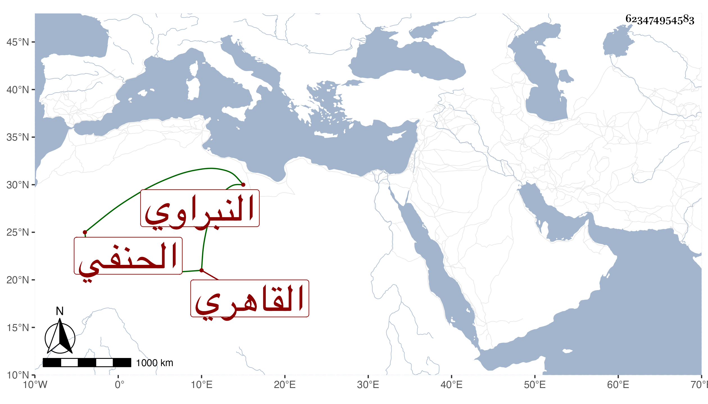

0902Sakhawi.DawLamic.ITO20230111-ara1.EIS1600.623474954583
Biography ID: 623474954583
1015
محمد بن أحمد بن حسين بن ناصر الدين بن الشهاب النبراوي القاهري الحنفي أحد النواب ويعرف بالنبراوي ، كان أبوه يقرئ الأبناء فنشأ هو وحفظ القرآن والمختار وغيره واشتغل قليلا وبرع في التوثيق وتدرب فيه بالمحيوي الأزهري والقرافي وأخرين وقصد فيه ، وناب في القضاء وراج أمره فيه خصوصا مع اختصاصه بالدوادار دولات باي المحمودي وكان ينفذ ما يحصله من ذلك أولا فأولا لمزيد كرمه ومحبته في الاجتماع المذموم مع همة ومروءة وبه تدرب جماعة وتزوج بأخرة خديجة ابنة التقي البلقيني . ومات معها في يوم الثلاثاء تاسع عشرى جمادى الأولى سنة ثلاث وستين سامحه الله وإيانا .
